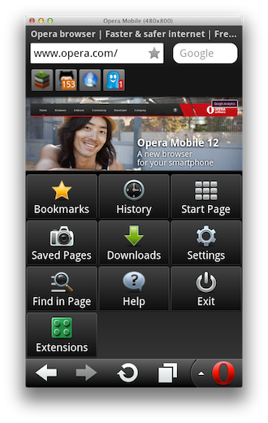
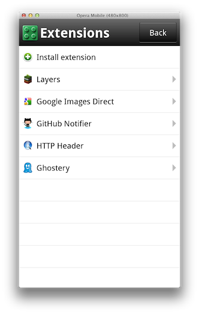
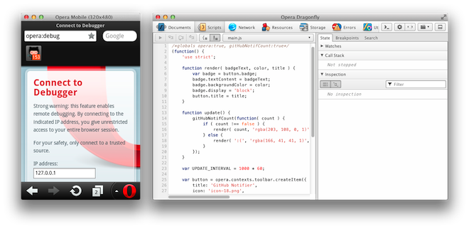
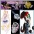

Extensions come to Opera Mobile
When adding extensions support to our Presto engine back in 2010, a lot of time was spent behind the scenes so as to make our extensions framework very versatile and lightweight. Although the initial release was targeted for desktop only, every aspect of the extensions API was drafted with mobile in mind.
Today, we're happy to present you with a Labs release of Opera Mobile with support for extensions!
This is a very early Labs release and it's not quite certain at this point that extensions functionality will effectively make it into a future release of Opera Mobile; the design is also most definitely not final, and there are some rough edges here and there, but if that doesn't scare you away – and why should it! –, you can find an Opera Mobile Labs build with extensions support for Android below. In addition, we've released extension-enabled Opera Mobile Emulator Labs builds, so you can test your extensions in a desktop-based Opera Mobile instance as well.
- Opera Mobile Labs build with extensions for Android (.apk)
- Opera Mobile Emulator Labs build with extensions for Windows (.zip)
- Opera Mobile Emulator Labs build with extensions for Mac (.dmg)
- Opera Mobile Emulator Labs build with extensions for Linux (.tar.gz)
Once you've downloaded a build, you'll want to head over to the Opera Extensions site, where you'll find plenty of extensions to play with. When doing so, please keep in mind the following known issues:
- Speed Dial extensions are not supported.
- Extensions relying on keyboard shortcuts and/or mouse events might not work as expected.
- Popup windows are currently launched as a new tab, which limits their functionality. This is a known issue, and as stated earlier, this is not the final design.
- Buttons can become blurry on high-DPI screens.
If you don't know where to start, we found the following extensions to work quite well: Ghostery, Layers, Google Images Direct, HTTP Header, LastPass.
You can find all installed extensions by clicking the green Extensions icon in the Opera Menu, from where you can disable or uninstall them, and tweak various settings. Furthermore, the Install extension menu option allows you to sideload extensions from the local file system as well.
 We have also added the option to load unzipped extensions for testing purposes, just like Opera desktop's Developer Mode. This is very handy for development, as it saves you from zipping and installing your extension over and over again. In order to use this, load Opera Mobile on your device or PC, choose the earlier mentioned Install extension menu option and navigate to the config.xml file of your unzipped extension. The extension will then be loaded in developer mode, and its settings page has a handy Reload menu option, which you can click to reload the extension after you've made some changes to the code.
And of course, you can use Opera Dragonfly's remote debugging functionality to inspect the inner workings of the installed extensions' JS, DOM and CSS. For detailed instructions on how to connect Opera Mobile with Opera Dragonfly, we refer to the remote debugging section in our Opera Dragonfly guide: it's as easy as clicking a few buttons.
So, that's mobile extensions in a nutshell. Give it a spin, try out your favorite extensions, and let us know in the comments what you think about it!
Andreas Bovens

Andreas is based in Oslo, where he works for Opera Software as Extensions Product Manager + Developer Relations.
This article is licensed under a Creative Commons Attribution 3.0 Unported license.
Comments
-

This is really good news. It was a dealyed feature but it seems just implemented. Thanks.
-
Will there be a mobile friendly version of the Opera Extensions site? At present the site doesn't detect mobile devices (like http://m.opera.com does) nor does it use responsive design/media queries (like http://my.opera.com)
-

Andreas .los felicito cada dia van mas adelante .opera sera en el futuro una compañia muy independiente.y cubrira un gran camino en el campo de las comunicaciones. Paso de creadores
-
Fantastic!! \m/
-
Please consider providing packages for Symbian Belle and Harmattan/Meego (N9).
-

Is not URLFilter API supported?
-
what about it for S60, i want to try it too, but cant find the download
-
it's great! But you make an API for speeddial extension?
-
For Symbian please... :)
-

Sweet! Now all I need is an android phone :D
-
That could be good news if it is going to take place in final releases, but.. Opera mobile widgets would also be fine, it also looked promising at the time.
-
Coooooolll
-

I can't wait to get my hands on a real smartphone to test this - Imma out of luck with my E51.
-
good...
-

Really useful extention. Hey need an extention for video chat so can chat on social network. And provide commentor to write website url. My blog http://narendrasblog.blogspot.com
-
Waiting for Symbian Belle compilation.
-
Tried on Android and looks nice :) But buttons should be placed somewhere else.
-

-
very good, thx :-)
-
I do not know whether there is Chinese IOS mobile phone client
-

controls not fixed. page keeps floating right and left while scrolling. impossible to click on links, because page start shaking while clicking. text also keeps reflawing outside of visible area.
-
need opera ext for nokia x2
-
Waiting for Symbian. tnx team
-

Thank you so much!
-

its very awesome
-
opera is my day to day browser.but i can't read my language amharic font.please help on this.
-
But not for symbian.
-
Where did i get amharic
-

nice
-

Thanks,
-

Are those mobile extensions intended also to iOS devices?
-

its a good idea but on HVGA screens (for example Sony Ericsson Xperia mini pro) the extension bar is too big, and the buttons in the menu also, see pics:
-

hey in my opera mini for BlackBerry 8520 curve Facebook doesn't seems to work what should i do to rectify it
-
Great news, works great out of the box on an htc desire.
-

I love but it would be nice to have a rss extension or have it installed on it.
-

When opera labs 12 for the N9?
-

Since iPhone users are only able to get Opera Mini: Can you comment on adding support for extensions to it as well?
-
hmm does this exetensions will work to with opera mobile s60v3 and above? I think because many of us using symbian.. Please develop for symbian, thx....
-
Nice implementation.
-
whoy ths opera mini dosnot downloaded 2my hand set mmm
-
loaded this build on my archos a101 tablet. love it! has now become my default browser!
-

what can i do without flash plugins? Is there any solution?
-

I hope a polished version of this comes to Opera Mobile proper. I'm using it on Android ICS with lastpass and it's great alternative to Firefox for Android. I've even started using Opera desktop for syncing purposes and I like it.
-

You know, if this is your idea of a 'rough' initial attempt, I really CANNOT wait for what you consider 'polished'. I recently purchased a Nexus 7, and both the stock 'mini' and mobile Opera browsers crashed repeatedly. (I found Chrome lacking, and had been using Firefox for the flash support on 4.2.1) Also, with no extension support, I felt that my experience was really lacking. I found and installed this, and it's been FLAWLESS. It's now my default browser. Loaded WOT, Lastpass, and an ad blocker, and it has made browsing so enjoyable and productive. You MUST leave extension support alone--see how subtle I was there? It really makes this browser one-of-a-kind in the mobile workspace. Thank you for the hard work, and I look forward to seeing your progress.
-

I love this lab version,but it's getting pretty old. Will there be an updated version in a nerar future? Or even better, any plans to include it in the official version?
-

Works great!
-
Why isn't it included in official release?
-

nice addiction, but the "install extension" but makes us to search any file instead take us to the extension site. And I didn't like of a extension bar. Maybe it worked in a huge screen but not in a Samsung Galaxy Y. Please, if is to access the extensions i prefer use the extension button.
-
nice update, the only problem iv found is that it does not look good when I put it on a tablet. I love the addons!
-

Any updates on when it will be included in the official release?
-

The extension it is a good development but it seems there is no nokia S40 version. If there is let me know.
No new comments accepted.Mağruf Çolakoğlu
Tuesday, April 3, 2012
Patrick O'Reilly
Tuesday, April 3, 2012
carlos a. otero r.
Tuesday, April 3, 2012
d4rkn1ght
Tuesday, April 3, 2012
Chris Hills
Tuesday, April 3, 2012
ふ～ちゃん
Tuesday, April 3, 2012
Zini Stanley
Tuesday, April 3, 2012
mega7star
Tuesday, April 3, 2012
wahyu3s
Wednesday, April 4, 2012
Dane
Wednesday, April 4, 2012
Khaled Khalil
Wednesday, April 4, 2012
dsasha
Thursday, April 5, 2012
Best Best Best
D1sasterp1ece
Friday, April 6, 2012
nidheeshr
Friday, April 6, 2012
Narendra Parmar
Friday, April 6, 2012
Michał Borek
Friday, April 6, 2012
Michał Borek
Friday, April 6, 2012
Anyway good work and I hope it will be pushed to official product ;)
QuHno
Saturday, April 7, 2012
Hm - I tested the emulator with my extension, it works just out of the box, but instead of the 64bit icon it seems to use the 18px icon which becomes a little bit blurry. Is there a documentation available how to change that?found it. I replaced it by a 72*72px icon which scales well to the 18px of the desktop version and the (don't know what, but multiple of 8) px of the mobile versions.
Mates FM
Monday, April 9, 2012
MCAnthony
Tuesday, April 10, 2012
myregs
Tuesday, April 10, 2012
extensions does work. not all though. extensions based on text selection doesn't work. they can't get selected text.
Silentalker
Saturday, April 14, 2012
iDarned
Monday, April 16, 2012
Andrey Nikanorov
Monday, April 16, 2012
xcone
Wednesday, April 18, 2012
dereje demissie
Friday, April 20, 2012
Samiul Islam
Saturday, April 21, 2012
Please make it for symbian
abdulahi ali mussa
Tuesday, April 24, 2012
Ashok singh
Sunday, April 29, 2012
Edison Fredy Castillo Quintero
Tuesday, May 8, 2012
atar
Friday, May 18, 2012
renato93
Tuesday, May 22, 2012
https://www.box.com/s/2c6b414b67e624714fc7
https://www.box.com/s/803a7d6ad4999fbce7bc
https://www.box.com/s/9f932ca6f57671a2146e
https://www.box.com/s/cf9b901bed1666c67a47
komalkoppikar29
Monday, May 28, 2012
Matthieu
Tuesday, June 19, 2012
With that it will be possible to use my userjs and urlfilter rules (in an extension) and that's a good news.
Charmed Espada
Tuesday, June 26, 2012
hardc0de
Monday, July 9, 2012
Christoph
Tuesday, July 10, 2012
Benyamin Limanto
Tuesday, August 7, 2012
Nimesh
Sunday, August 12, 2012
any updates planned? this post/build is 4 months old.
Vusi,Tumelo,Nngcan's-DjsRoack,Dlamini
Thursday, September 6, 2012
dond624
Sunday, September 23, 2012
extensions BETTER make it into final, or i'm gonna be very unhappy
thanks for the great work.
btitan
Sunday, October 7, 2012
Mike D
Saturday, November 10, 2012
nicambrose
Sunday, December 2, 2012
Joakim Wallman
Monday, December 3, 2012
billyxmobile
Saturday, December 8, 2012
Please include it in the regular version!
For Adblock plus if you get the message about "exceeded storage quota" you have to change opera:config#PersistentStorage|DomainQuotaForWidgetPreferences (http://www.opera.com/support/usingopera/operaini/#persistent_storage)
niks256
Monday, December 10, 2012
Tiago Wakabayashi
Monday, December 17, 2012
hairycheez
Monday, December 31, 2012
Gildas35
Tuesday, January 22, 2013
ahmed2bori
Friday, February 1, 2013